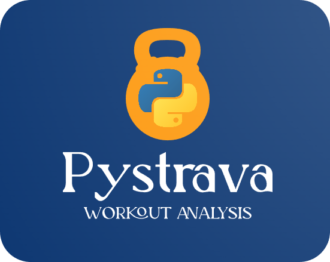

PyStrava

In 2020, amid the pandemic, I prioritized my health and bought a Garmin smartwatch for workout tracking. Tangible progress markers motivated my daily efforts. After consistent workouts over three years, I had valuable data. Curiosity drove me to explore coding possibilities. I aimed to create a personalized fitness tool, leading me to Strava's API. Strava, like a fitness Facebook, stored my Garmin-recorded workouts. While Garmin and Strava offered data, I sought tailored insights. Balance was crucial – avoiding overtraining or stagnation. To address this, I created a Workout Effort Score. This led to a multi-label model categorizing activity effort levels, guiding a balanced routine.